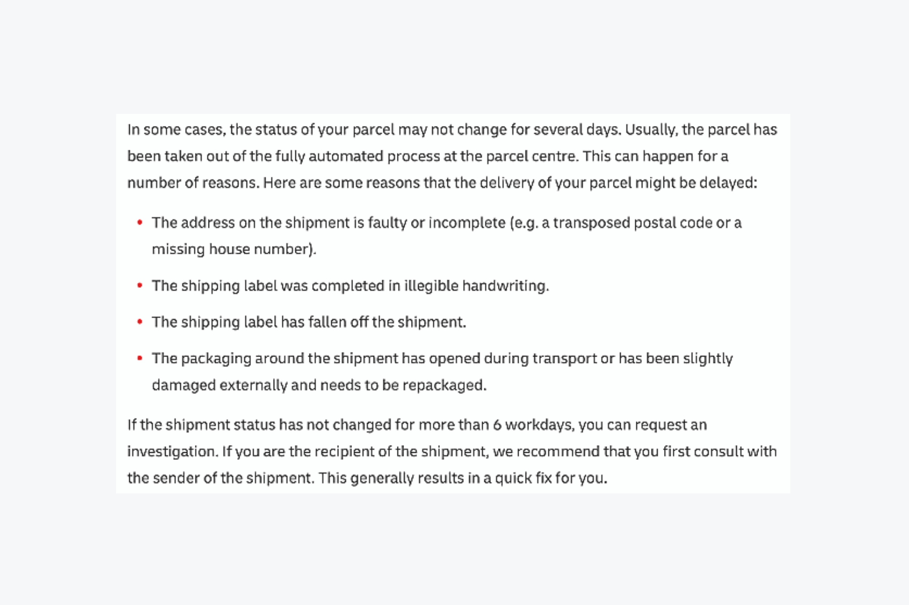
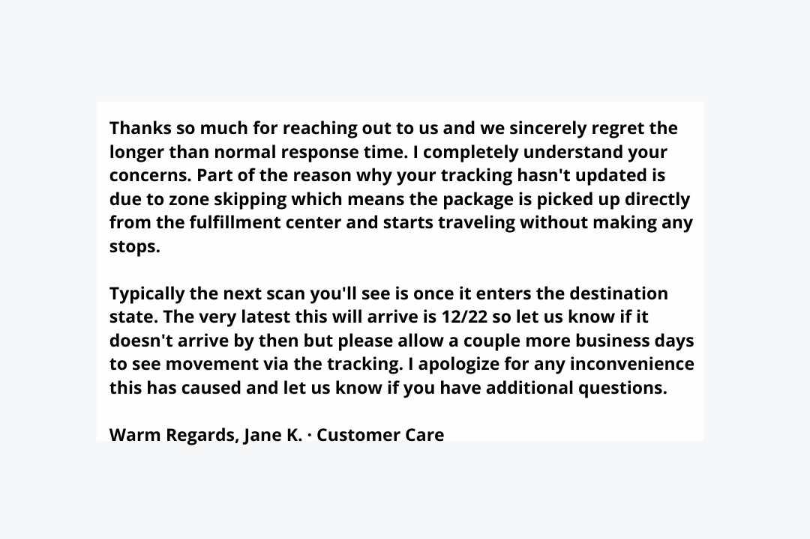
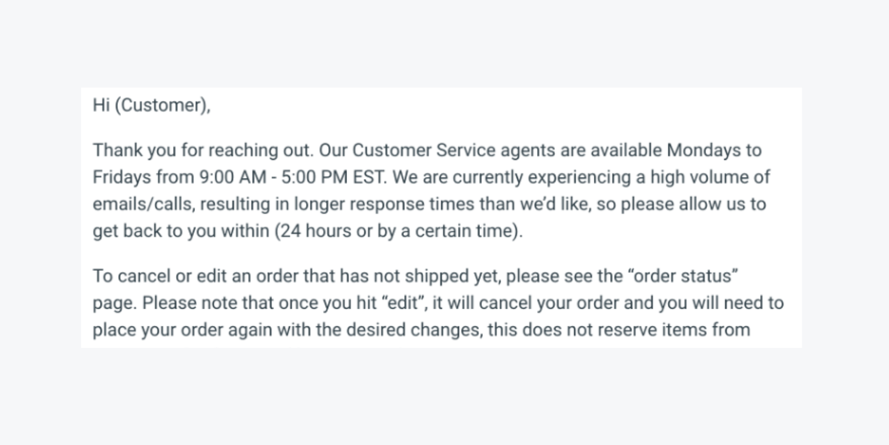
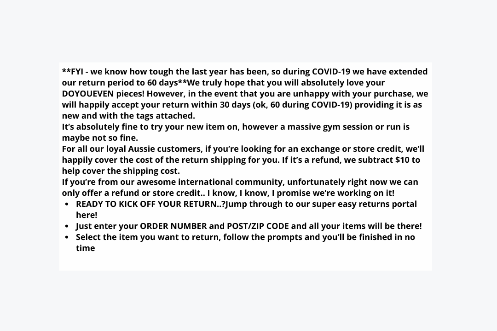
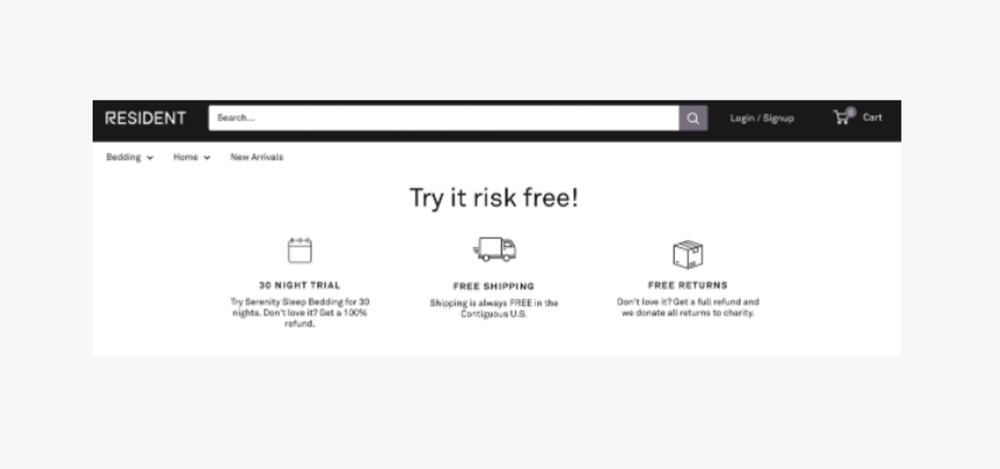
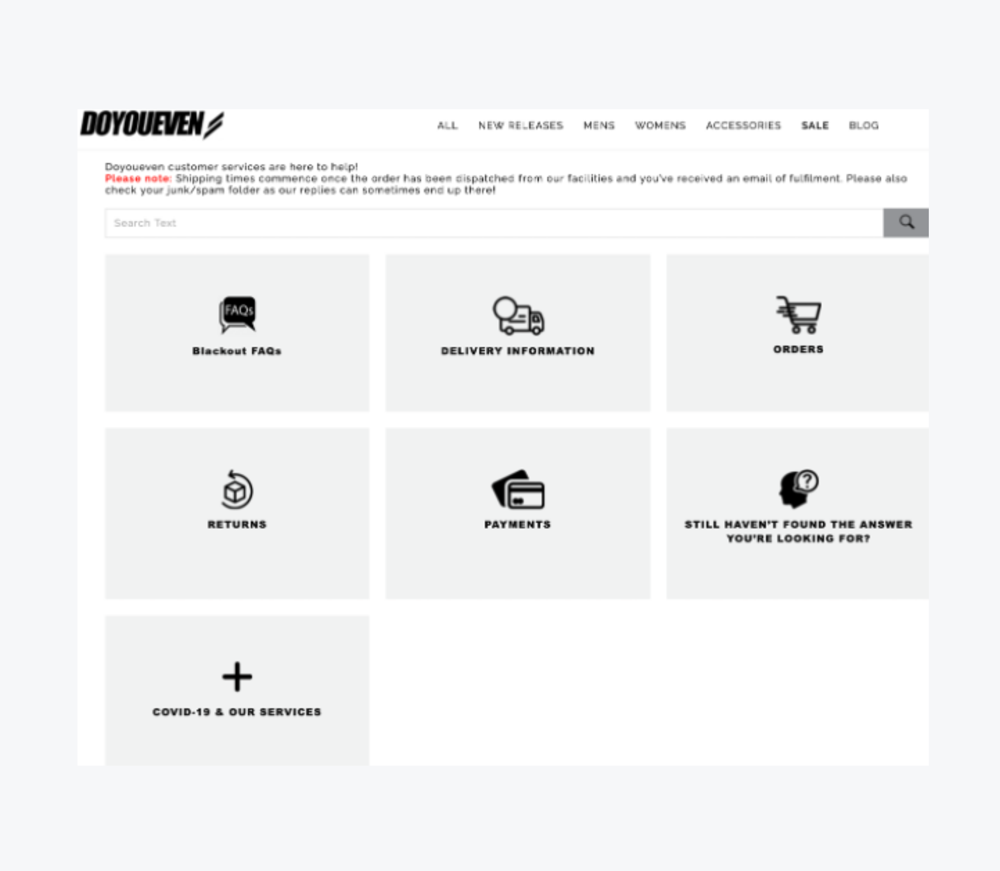
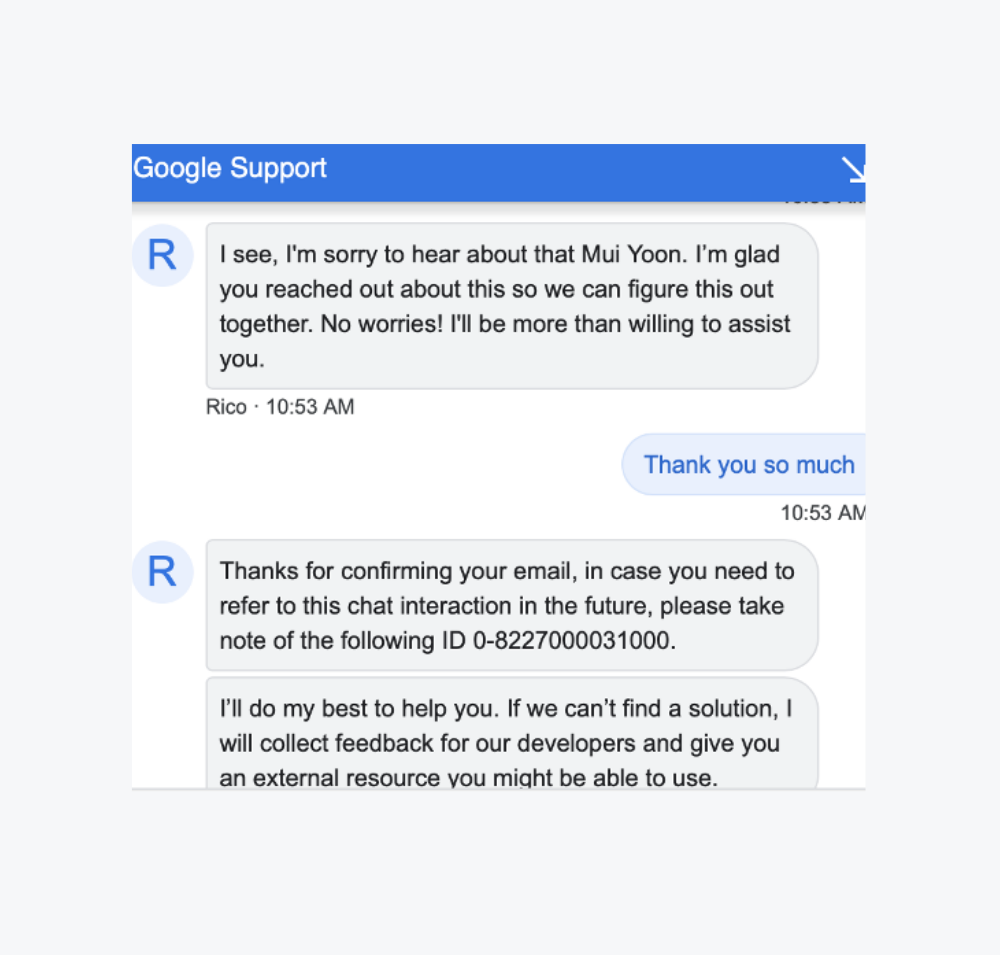

Jim Rohn, the American entrepreneur and author said, “One customer, well taken care of, could be more valuable than $10,000 worth of advertising.”
For Influx, we have seen many of our high-growth ecommerce clients disrupt traditional niche industries with outstanding customer service that makes customers feel incredibly valued. And happy customers become your best ambassadors.
Customers expect speed, friendliness, convenience, and consistency. 86% are willing to spend more money when they feel they’ve had a good customer experience.
But sometimes, things do go wrong on the customer journey, and customers reach out for support. Here’s where businesses can stand out by how well they manage these situations.
How to deal with customer complaints
Ecommerce customer service provides your customers with support and assistance when they reach out to you for answers. Ecommerce customer service is critical to your business because of the hugely competitive playing field.
Examples of customer complaints and how to handle them
In the U.S., even when people love a company or product, 59% will walk away after several bad experiences, 17% after just one bad experience. And 32% of all customers would stop doing business with a brand they loved after a single negative experience. So, how to handle customer complaints?
When facing ecommerce customer complaints, how do you deliver solutions with a human touch? Let’s take a look at these customer complaint examples.
1. Where is my order?
Lost or late orders are a frequent ecommerce customer complaint, especially on urgent or time-sensitive orders.
Solution:
Research has shown the importance of incorporating tracking so that customers can follow their deliveries. But what can you do when your third-party logistics partner delays the delivery, or worse, it goes missing? Cross border tracking is sometimes not possible and support agents would not be able to check for customers.
Many factors can lead to the loss or delay of a delivery as explained by DHL here below:

Your ecommerce customer service team would need to handle these cases with care, as customers’ expectations are on the line. An effective and empathetic email reply to acknowledge and explain the situation helps tremendously to alleviate customer concerns so that customers know that their case is being handled.
Here’s an ideal example acknowledging a late delivery for a customer that’s delivered with empathy:

2. I have been waiting forever
When customers can’t get hold of a customer support agent especially when they have a complicated issue, they get frustrated. It is that simple.
Solution:
Setting expectations for customers is essential so they know how long waiting times would be for their tickets to get answered, whether it’s a basic 24-hours or a 5-minute response time such as Manly Band’s extraordinary level of customer support.
####
The example below shows an automated response that helps manage customer expectations is taken from Influx’s 25+ customer service email templates.

Ecommerce customer support agents can point customers in the right direction, provide alternatives, and create solutions. Proactive customer support agents functioning in a positive feedback loop would also notify managers on out-of-stock items and would update these customers so they know they are being heard.
3. I changed my mind
A customer service team would always need a playbook for responses or FAQs visible to customers on the site that clearly explain what to do when customers change their minds after making a purchase.
Solution:
Store policies such as a solid returns and exchange policy is central to ecommerce customer satisfaction, as it helps them feel confident about buying from a site when they know it is easy to make a return or an exchange.
When done thoughtfully, your return policy creates confidence, trust, and security. Your refund policy is the rock of your customer support. A well-crafted refund policy makes it easy for your support agents to resolve issues quickly.
####
Here’s a return policy by Doyoueven with an extended returns coverage from 30 days to 60 days to make it even easier for customers to change their minds:

As customers cannot touch or test a product sold online, they’d need a flexible Returns Policy that spells out:
- purchases that can be refunded or exchanged
- money-back or store credit
- when they could expect this to happen, and
- a step-by-step process to help set expectations
####
Resident Home’s 30-Night Trial and free returns create customer confidence.

4. My issue is not resolved
Speed is crucial in today’s competitive ecommerce landscape, and customers expect swift replies so that you can resolve their issues or answer their queries.
Solution:
First-call resolution is crucial. Studies have shown that nearly 70% of customer churn can be avoided if customer service can solve their issues when they make that first call. Live chat offers immediate assistance that works well for customer service, while voice support is instant and soothing.
While first call resolutions may not be possible for all customer requests, especially during peak seasons, intelligent automation works in letting customers know when they can expect a reply.
Another effective way of resolving customer issues is by having self-service support for customers, such as a well-designed Knowledge Base or a comprehensive set of FAQs that help relieve the load off your customer service team during peak seasons.
And with cross-border ecommerce thriving today, some 58% of consumers have stated that shopping 24/7 is a critical factor for buying online. Thus, a global business would need 24/7 customer service, even on weekends, to meet customer needs.
####
Doyoueven has a website that offers a helpful section that makes it easy for customers to find a quick answer.

5. It was broken when it arrived
When customers receive a faulty product or one that did not meet their expectations, having a clearly defined Returns and Refund Policy is crucial in managing such cases and resolving an issue.
Solution:
Sometimes customers do not know how to use a new product, app, or service and believe it is malfunctioning. In such cases, an onboarding or welcome email is crucial for new customers. Emails written with empathy and support are essential to resolving the issue, such as requesting more information if needed or explaining what to do step by step.
“Using words that convey understanding and support tells the customer that someone is listening to them and is working with them in solving their issue, it goes a long way in helping to diffuse anger,” says Influx Client Team Leader, Billa Ashaninka.
“After they have finished venting their frustration, you can summarise or paraphrase, and clarify what they have shared. Or you can ask for more information if the facts are unclear. Taking these steps helps you to have a complete picture of what went wrong so that you can resolve the issue immediately.”
An excellent customer service message conveying empathy and support is shown here.

Once these issues are resolved, this would also be an ideal time to seek customer feedback to determine if there needs to be a long-term solutions, as tools such as NPS and CSAT provide data that can be used to improve products and services.
6. I have already explained this / I wasn’t told this earlier
Customers get irked when their issue isn’t resolved during their first call, or when they are passed to another agent.
Solution:
When a customer contacts you, they are already frustrated, so knowing that you are actively solving their problem for them helps a lot.
An integrated helpdesk and ticketing system that organizes, collects, displays customers’ previous calls and queries helps a customer service agent deliver the best support for an angry customer. Even if a case needs to be elevated to a senior customer service agent, they should be briefed before a call is transferred.
“Personalise your macros so that customers know that you are addressing their issues instead of giving them a standard reply,” says Influx Client Team Leader Billa Ashaninka.
“Even if you can’t provide a solution as a customer support agent, as it might need technical support, for instance, tell them, ‘I am looking at it for you right away, and if I can’t settle this, I will make sure that someone is solving this for you.’”
7. Nobody has replied to me
Nothing makes a customer feel unappreciated than when their message goes unanswered.
As such, the average time on hold and first response time should be measurable KPIs for customer service.
Solution:
Customers will likely wait for two minutes and hang up. About 34% of these customers will not call back. Ecommerce businesses stand to lose not only existing customers but also potential ones.
Set expectations on waiting times, especially for longer-than-normal periods such as during sales or holiday seasons. Ecommerce businesses can also do well to prepare their number of customer support agents rostered by forecasting using this free calculator.
Some customer support queries can be complex, requiring more time to resolve.
As one of Influx’s most experienced Delivery Managers, Oksy Putriani Azzahra, explains, “Never avoid a customer complaint, even if it is difficult or tedious. And never close a ticket on a customer until you have resolved the issue. Sometimes you may need to escalate a matter to a more senior team member or the client, but every customer would expect to have a solution.
“If a customer support agent promises to call a customer back, they must fulfill it.”
Top tips to effectively handle customer complaints
Handling complaints from customers have one thing in common - they can be managed and resolved with swift, empathetic, and skilful customer service.
Keep in mind these best practices to manage common customer complaints:
- Develop a clear customer service policy on handling every possible complaint or issue.
- Set out clear expectations with your ecommerce customer support agents on what they can or cannot do.
- Listen for understanding and clarify for facts.
- What does resolution mean for the customer? Is it a return, refund, replacement, or a repair? Or do they expect an exchange with the same product, price range, cash, or store credit?
- Resolve the issue on the first contact as far as possible.
- If a follow-up is required, lay out the steps needed and set expectations.
- Keep your promises.
Ecommerce customer service teams can resolve these common customer complaints and problems with the right tools and training. Ecommerce thrives on its ability to delight customers through swift, seamless service and great products delivered to their doorsteps. Customer complaint responses will help you understand how the customer feels. And loyal customers will be your best brand ambassadors to create future growth.
Your ecommerce customer conversation matters. To find out more about how Influx has reduced response times by 81% or successfully cleared 250,000+ support tickets within one month, contact Influx or read our case studies and testimonials from satisfied ecommerce customers.